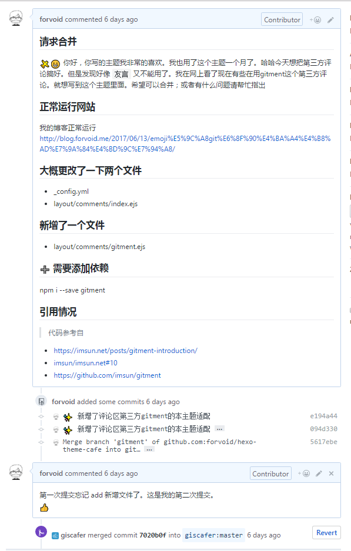

开发起因
自从blog建立以来，我就一直在尝试使用评论系统，便于与他人交流（虽然博客基本没人看，><）。哈哈，但是也是一直尝试，
前期用的本主题开发者使用的多说，但是很不幸运多说倒闭了。
就开始使用disqus，这个是当前全球最大的第三方评论系统了，但是很不幸基本需要翻墙才可以访问（FUCK GTW）。
然后就继续寻找 也尝试说 畅言 、网易云跟帖（这些主题开发者都提供了，使用较为方便）。但是都需要登录，还有的有点小软广。不是很满意。
后面看到了有大神开发了gitment传送门。就试试自己改改主题支持一下。
gitment的好处和坏处
gitment也有自己的不足，和好处，先说好处吧
- 1、数据会保存在github上面的iusse上面，数据保存不会丢失
- 2、评论可以用GTM 的markdown的方式书写，和在github iusse上写东西一样畅快
- 3、可以自己掌握第三方评论的信息，hacker的感觉还是不错的，毕竟数据都在自己的手中。
- 3、其他的好处可以看gitment的开发者 ，配置博客，如果你也想自己适配gitment最好看一下这个gitment适使用教材
缺点的话主要是以下几个方面
- 1、需要自己适配的话，需要有最基础的js、html、git、node的知识，这对于没有了解的人就是一个不小的鸿沟。
- 2、每次自己写文章发表后，都需要自己进行登录然后激活iusse当下文章的评论功能，这个很不人性化（不过作者说会在第二版进行解决）
- 3、开发维护者热情不高，这很可能有些问题需要自己多化时间进行。而且后面很有可能被更好的代替。
我的主要适配流程
¶看懂主题对于评论机制的代码编写
根据原作者的编写代码，阅读（可以借助chrome tools和主题代码）
¶添加主题的gitment评论信息
下面就是我根据上面的博客编写的 一些参数我配置在了主题的_config.yml中。
|
|
¶一些博客上有的信息
gitment使用博客已经有了，我觉得有点重要再说一下
- 那个 github的创建应用一定要正确，包括http或者https协议都要正确
- owner可以是github的id 也可以是你的用户名，id的查询方式google吧。
¶添加完成后就在本地测试
修改代码一定要在本地测试没有问题了。才能提交合并，这个很重要哈哈。
本地测试包括了本地登录 本地初始化 本地添加评论等。（可以用别人的帐号再试试）
这个过程有可能服务器不是很快的改变，（这里面有local DNS server等原因）所以当与预期不同的时候不要气馁。
我的合并过程
当我在我的博客写好了之后，我就修改主题提供者的git repo了。这个就必须修改本主题的demo。然后改好代码，
就进行pull requset。这个都很简单。不会的就google吧。

总结
其实，我写这个文章的目的就是：我们如果想做的事情就可以去试试，很多事情不是很难，比如我是学后台开发的前端不是很清楚。但是自己感兴趣就可以去学习，然后改改。我要对自己有信心去勇敢的迈出第一步。